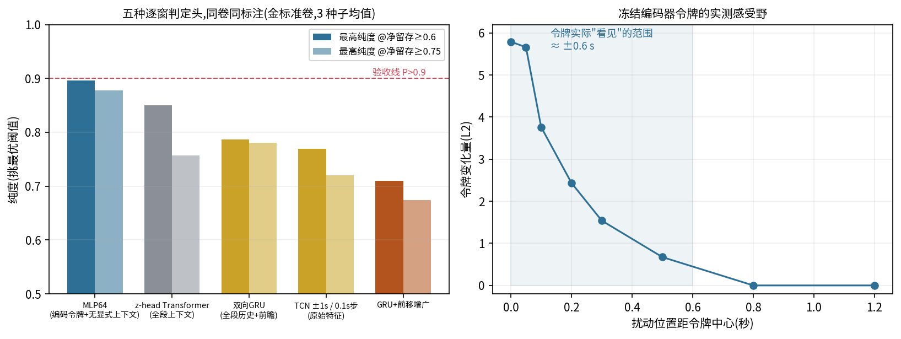

Generated from Markdown source: report/G1_MotionGPT/2026-08-22-punch-window-head-architecture-ablation.md
G1 动作段判定器 — punch 逐窗判定头的架构消融与感受野实测
Preliminary,续接 2026-08-21 过采样归因报告。 上一篇确立"无上下文 MLP 窗级头是 punch 当前最佳"后,本篇按 user 的质疑逐项检验带时序 上下文的替代架构,并以感受野实测解释了消融结果的反直觉之处。
Conclusion
- 五种逐窗判定头同卷同标注对比,MLP64(冻结编码令牌直入)在每个留存档位的纯度都最高; 全段上下文的三种实现(Transformer / 双向 GRU / ±1s TCN)全部落败,给 GRU 叠加起点前移 增广(检验"上下文头输在段数饥饿、增广造段应救它"的假设)反而伤得最重。
- 反直觉的谜底是感受野实测:冻结编码器的每个"0.2 s 令牌"实际对前后各约 0.6 s 的帧有 响应——赢家并非"只凭当下",而是±0.6 s 预训练局部上下文 + 逐窗小头;落败方输在 "现学的全段记忆"(有效样本 = 段数 ≈115,过拟合)对"预训练的局部上下文"(有效样本 = 窗数 ≈4,200)。
- MLP 尚无平台:半量标注 → 全量,纯度每翻倍 +0.05~0.06,与既有学习曲线斜率一致; synthetic 增广对三类头均为负收益(本会话第 5 次复证),真标注仍是唯一被证实的增长通道。
- punch 现状(金标准卷,验收判据 P>0.9 且 R>0.85):三个操作点各过一边,尚无同时过 两边的操作点;主表见 Results。
Problem and terminology
研究问题:逐窗判定头是否应携带时序上下文;"无上下文 MLP 更好"这一消融结果能否被 增广或更细粒度的上下文设计推翻,其机制是什么。
| Term | 本报告 operational definition | Scope / not to confuse with |
|---|---|---|
| 金标准卷 | punch 冻结考卷 59 段(净 32/脏 27),现行标准逐段人工标注,与一切训练材料零重叠 | 全项目冻结测试集(8443)是另一张卷 |
| 逐窗判定头 | 在每 0.2 s 编码令牌(或原始特征窗)上输出脏概率的小模型;段分 = 逐窗最大值 | 与整段级判定(z-head 的 seg 头)相对 |
| P@R≥x | 阈值从松到紧扫描,在净留存不低于 x 的约束下能达到的最高纯度;用于头与头的相对比较 | 阈值在考卷上挑,数字偏乐观,不作验收成绩 |
| 段首带抓率 | 考卷 27 段脏中,脏区间完全落在段首 0.6 s 内的 14 段里被判拒的比例 | 只衡量主攻模式,与总体脏剔除(NR)相对 |
| 感受野 | 扰动距令牌中心 d 秒处的 1 帧、令牌向量的 L2 变化量;变化归零处即令牌"看不见"的边界 | 实测值,非理论卷积感受野推导 |
| NP(拒侧纯度) | 被判拒的段中真脏的比例;NP 低 = 垃圾桶里错扔的好段多 | 与 P(留侧纯度)互补 |
Method
五臂同用 punch 训练池标注(约 115–143 段,×1 过采样等价的窗级监督),同考金标准卷, 各 3 种子。对照臂与假设:
| 臂 | 设计 | 检验的假设 |
|---|---|---|
| MLP64(基线) | 冻结编码令牌 512→64→1,无显式上下文 | — |
| z-head Transformer | 6L×384 全段双向注意力(注册臂配方) | 全段上下文助段首判别 |
| 双向 GRU | 令牌序列上 GRU,每窗判定带全段历史+前瞻 | 同上,隔离"上下文"单变量 |
| TCN ±1s / 0.1 s 步 | 原始 106 维特征,历史 1 s+前瞻 1 s,边界 padding,0.1 s 分辨率(user 规格) | 更细粒度+显式局部上下文 |
| GRU + 前移增广 | 训练序列 115→185(起点前移合成段) | 上下文头输在段数饥饿,增广造段可救(user 假设) |
| Criterion | Threshold | Measured | Verdict |
|---|---|---|---|
| 替代架构超过基线 | 任一留存档纯度高于 MLP64 | 全部低于(主表) | 全负 |
| MLP 平台 | 半量→全量纯度停涨 | +0.05~0.06/翻倍,未停 | 无平台证据 |
| 验收(P>0.9 且 R>0.85) | 同一操作点两者兼得 | 三操作点各过一边 | 未达标 |
Run Spec 与来源声明
NOT PREREGISTERED — 连续探针链,无单一确认版 Run Spec;各臂均为 user 会话内逐项定向
("用带历史的模型给逐窗判断" / "带历史1s+带前瞻1s…判断当下0.1s" / "假如我们再用回数据
增广呢" / "mlp网络怕有平台"),执行与读数即时落
logs/g1_motiongpt/zhead_multi_punch_real60/evidence_v2cleanexam.json(context_head_battery
等字段)与 probes/ 目录。
Results

| 逐窗判定头 | P@R≥0.4 | P@R≥0.6 | P@R≥0.75 | 段首带抓率 |
|---|---|---|---|---|
| MLP64(基线) | 0.963 | 0.896 | 0.878 | 0.74 |
| z-head Transformer(全段上下文) | 0.928 | 0.850 | 0.757 | 0.57 |
| 双向 GRU(全段历史+前瞻) | 0.890 | 0.787 | 0.780 | — |
| TCN ±1s / 0.1 s 步(原始特征) | 0.904 | 0.769 | 0.720 | 0.71 |
| GRU + 前移增广 | 0.755 | 0.710 | 0.674 | 0.88* |
* 增广臂段首带抓率最高但净段误伤同步翻倍——学会合成教的形态、赔掉别处纯度,前沿反而最低。
punch 当前完整成绩单(五指标,金标准卷):
| 模型 / 操作点 | acc | P | R | NP | NR |
|---|---|---|---|---|---|
| 注册臂 z-head(阈值 0.5 预定,无乐观偏置) | 0.734 | 0.745 | 0.781 | 0.730 | 0.679 |
| MLP64 均衡档(阈值 0.93,考卷上挑) | 0.785 | 0.837 | 0.750 | 0.736 | 0.827 |
| MLP64 高纯度档(阈值 0.70,考卷上挑) | 0.667 | 0.930 | 0.417 | 0.582 | 0.963 |
感受野实测(右图):扰动距令牌中心 0.05 s 处令牌变化 5.66,0.3 s 处 1.54,0.5 s 处 0.67,0.8 s 外精确为 0——每个令牌是约 ±0.6 s 动作的预训练摘要。
Analysis
- 测量:消融的正确读法不是"上下文无用",而是"±0.6 s 预训练局部上下文已内置于令牌, 额外叠加现学的全段记忆是负资产"——带记忆的头把窗间梯度耦合起来,有效样本从约 4,200 个窗坍缩到约 115 段,先被过拟合杀死(z-head 分数两极化为同一病征)。
- 测量:user 的"段数饥饿 → 增广造段救上下文头"假设已直接检验并否定(前沿 0.890→0.755); 合成标签按位置定脏净、在起势/残留语义带注入噪声的病理(上一篇)对上下文头同样成立。
- 测量:MLP 半量→全量纯度 +0.05~0.06/翻倍,无平台证据;上下文架构约定在标注量再翻倍后 复测(届时其理论优势针对的变体/段内自恰模式恰是剩余主要漏项)。
- next:①段首带定向标注(模型段首分数 0.3–0.9 的不确定带采样,punch 预算余约 25 段); ②8443 考卷扩容(7 类 ×50)标注中,产出后各类真实脏率替换 1:2 估计。
Appendix
头条数字代入式与证据路径
- MLP64 P@R≥0.6 = 0.896(3 种子最优阈值纯度均值);高纯度档 P = 0.930 @ R = 0.417
- 感受野边界:令牌变化量 0.5 s 处 0.673 → 0.8 s 处 0.000
- MLP 平台探针:半量两切分排序 0.751 / 0.760 → 全量 0.811
- 证据档:
logs/g1_motiongpt/zhead_multi_punch_real60/evidence_v2cleanexam.json(context_head_battery / synth_autopsy 字段);逐臂分数:同目录probes/(gru_head_scores / gru_synth_scores / ctx_window_01s / mlp_base_scores) - 金标准卷:
outputs/g1_motiongpt/test_sets/punch_gold_exam_v1.json
已知限制
- 考卷 n=59,单段 = 1.7 个百分点;P@R 系列阈值在考卷上挑选,只作头间相对比较。
- 各上下文臂均为单一实现(TCN/GRU 的宽度、步数未扫参);"当前标注量下落败"不排除 大数据量下反转,已约定复测点。
- 感受野实测基于单段、单令牌位置、随机扰动 5 次平均;结论(±0.6 s)与卷积结构推导一致, 未做逐段普查。
- 五指标表中 MLP 两档阈值未经部署前的训练侧定线程序,直接引用需按认证工序重定。